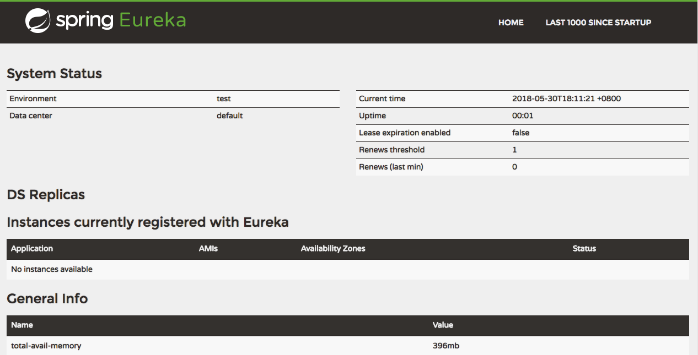

这是Spring Cloud上手系列的第二篇，代码放在GitHub上，随着本系列文章更新。
服务治理框架
Spring Cloud为服务治理提供了抽象接口，在Spring Cloud应用中可以支持多种不同的服务治理框架，如：Eureka、Consul、Zookeeper。
Spring Cloud Eureka是Spring Cloud Netflix项目提供的服务治理模块。Spring Cloud Netflix是Spring Cloud的子项目，Netflix公司贡献的模块都包含在这个子项目中，如：服务发现(Eureka)，熔断器（Hstrix），集合服务（Zuul），负载均衡（Ribbon)。
在我们的系列文章里就直接使用Netflix全家桶了。
构建Eureka服务注册中心
根据前一篇文章的规划，我们将在registry工程中构建服务注册中心。
依赖配置
首先在registry/build.gradle中配置注册中心的依赖。
dependencies {
compile libs.'eureka-server'
}
jar {
manifest {
attributes "Manifest-Version": 1.0,
'Main-Class': 'com.github.jamsa.sc.registry.Application'
}
}
这里的libs.'eureka-server'来自于根模块对依赖名称的定义，主要是为了集中对依赖名称和版本进行管理。根模块的build.gradle中配置的版本信息为：
//依赖版本号
ext.versions = [
springCloud :'1.3.2.RELEASE',
netflix:'1.4.3.RELEASE'
]
//依赖
ext.libs = [
"sc-starter":"org.springframework.cloud:spring-cloud-starter:${versions.springCloud}",
"eureka-server":"org.springframework.cloud:spring-cloud-starter-netflix-eureka-server:${versions.netflix}",
"eureka-client":"org.springframework.cloud:spring-cloud-starter-netflix-eureka-server:${versions.netflix}",
"zuul":"org.springframework.cloud:spring-cloud-starter-netflix-zuul:${versions.netflix}",
"http-client":"org.apache.httpcomponents:httpclient:4.5.2"
]
程序入口
服务注册中心Spring Boot程序的启动入口类 Application为：
@SpringBootApplication
@EnableEurekaServer
public class Application {
public static void main(String[] args) {
SpringApplication.run(Application.class, args);
}
}
只使用了@EnableEurekaServer声明应用需要启用Eureka注册服务。
服务配置
服务的配置文件放在application.yml中：
spring:
application:
name: sc-registry
server:
port: 9001
eureka:
instance:
hostname: localhost
client:
registerWithEureka: false
fetchRegistry: false
serviceUrl:
defaultZone: http://${eureka.instance.hostname}:${server.port}/eureka/
spring和server段是Spring Boot程序的配置部分，用于配置应用名称和服务端口。注册中心的配置都在eureka段，registerWithEureka需要设置为false，标明应用不要把自己注册到Eureka中，fetchRegistry标明不需要从注册中心获取服务信息。serviceUrl.defaultZone用于配置服务中心的访问地址。其它应用在配置服务注册中心地址时，需要与这个地址保持一致，url中的变量就是上面的属性。
在idea中配置这个文件的时候发现有个小问题，idea中的自动提示总是显示为中杠分隔的属性名，如：service-url、default-zone等，这个问题导致我在测试的时候，客户端程序总是无法连接到注册中心。
构建和启动服务
在根模块中使用gradle :registry:build构建服务注册中心应用。
完成后使用java -jar registry/build/libs/sc-registry-0.0.1.jar启动服务注册中心。
就能在http://localhost:9001查看到服务注册信息了，当然现在还没有服务注册。

Comments